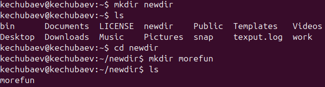

Целью данной лабораторной работы является приобретение практических навыков взаимодействия пользователя с системой посредством командной строки.
В операционной системе типа Linux взаимодействие пользователя с системой обычно осуществляется с помощью командной строки посредством построчного ввода команд.
Командой в операционной системе называется записанный по специальным правилам текст (возможно с аргументами), представляющий собой указание на выполнение какой-либо функций (или действий) в операционной системе.
Обычно первым словом идёт имя команды, остальной текст — аргументы или опции, конкретизирующие действие.
Команда man используется для просмотра (оперативная помощь) в диалоговом режиме руководства (manual) по основным командам операционной системы типа Linux.
Команда cd. Команда cd используется для перемещения по файловой системе операционной системы типа Linux.
Команда pwd. Для определения абсолютного пути к текущему каталогу используется команда pwd (print working directory).
Команда ls. Команда ls используется для просмотра содержимого каталога.
Команда mkdir. Команда mkdir используется для создания каталогов.
Команда rm. Команда rm используется для удаления файлов и/или каталогов.
Далее я перешел в каталог /tmp, при помощи команды cd /tmp:
Потом я вывел на экран содержимое каталога /tmp. Для этого использовал команду ls с различными опциями:
Перешел в домашний каталог и вывел на экран его содержимое. Определил, кто является владельцами файлов и подкаталогов посредством команды ls -al. Большинство файлов принадлежат моему пользователю и root.
В домашнем каталоге я создал новый каталог с именем newdir при помощи команды mkdir. В каталоге ~/newdir создал новый каталог с именем morefun:

С помощью команды man я определил, какую опцию команды ls нужно использовать для просмотра содержимое не только указанного каталога, но и подкаталогов, входящих в него. Введя в консоли man ls Мы получим справку на английском языке и в ней нужный нам ключ к команде. Это ключ -R
Также с помощью команды man определим набор опций команды ls, позволяющий отсортировать по времени последнего изменения выводимый список содержимого каталога с развёрнутым описанием файлов. Введя в консоли man ls Я получил справку на английском языке и в ней нужный мне ключ к команде. Это ключ -t.
Потом я использовал команду man для просмотра описания разных команд.
Используя информацию, полученную при помощи команды history, выполним модификацию и исполнение нескольких команд из буфера команд.
В ходе данной лабораторной работы я приобрел практические навыки взаимодействия пользователя с системой посредством командной строки.
Ответ: текстовый интерфейс взаимодействия пользователя с системой
Ответ: команда pwd, пример: cd /var/www
pwd
/var/www/
Ответ: команда ls с опцией -F.
Ответ: Некоторые файлы в операционной системе скрыты от просмотра и обычно используются для настройки рабочей среды. Имена таких файлов начинаются с точки. информацию о них можно получить с помощью команды ls с опцией -a.
Ответ: С помощью команды rm можно удалить как отдельный файл так и целый каталог, в случае каталога необходимо указать опцию -r.
Ответ: с помощью команды history.
Ответ: узнать порядковый номер этой команды с помощью history
затем изменить её сл. образом:
!<номер команды>:s/<что меняем>/<на что меняем>
Ответ: да, можно, необходимо разделить команды символом точки с запятой в таком случае они будут выполняться последовательно в том порядке, в котором они записаны пример: cd /tmp/; ls -l;pwd
Ответ: символ экранирования (обратный слэш) - символ, экранирующие управляющие конструкции и символы в названии файлов и папок Пример: ls /etc/nginx
Ответ: тип файла, право доступа, число ссылок, владелец, размер, дата последней ревизии, имя файла или каталога.
Ответ: относительный путь - путь к тому или иному файлу или директории относительной текущей рабочей директории, пример:
папка /www/ в директории /var/ абсолютный путь: /var/www/
относительный путь(если рабочая директория - /var/): /www/
Ответ: можно попробовать найти информацию по использованию с помощью утилиты man, или попробовать ввести опцию –help.
Ответ: клавиша Tab.